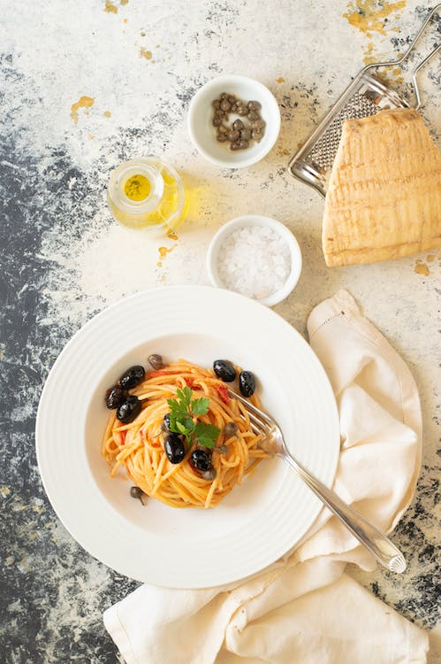

Pasta Oliva

Description
Pasta Oliva is a (non) traditional dish from the north of Italy.
A symphony of flavors birthed from the unlikely encounter of italian pasta and american ketchup for a meal hard to forget.
Ingredients
- Spaghetti (100g / person)
- Ketchup (a lot)
- Stoned Olives
- Capers (Optional. Let's face it, it's disgusting)
- Parsley (Optional)
Steps
- Boil the spaghetti in salted water. Drain and return to the pot.
- Add ketchup and mix until the spaghetti take a nice red color.
- Serve with olives and capers.
- Add parsley for a fancy Instagram photo.
photo credits: Ilaria